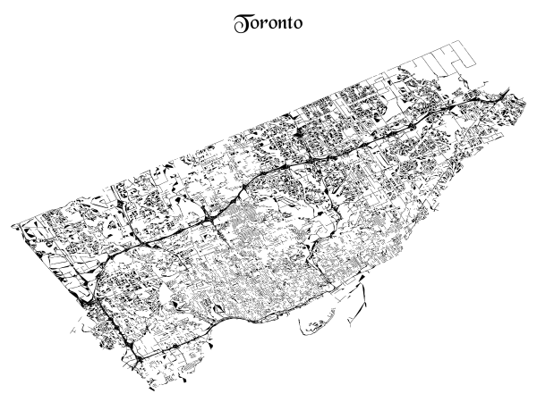
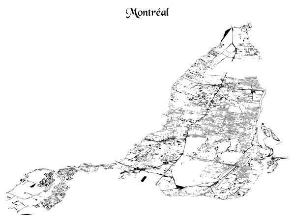
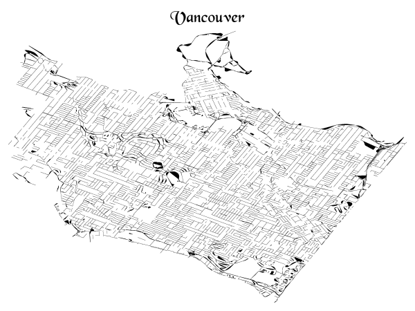
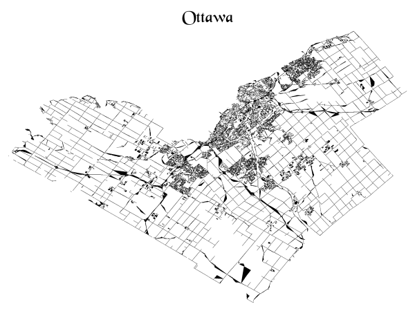
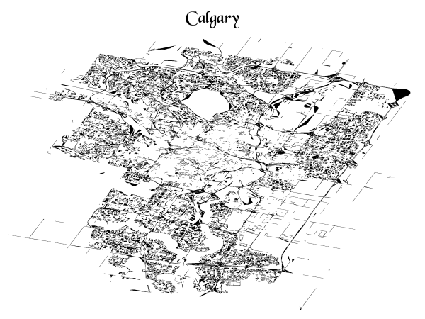
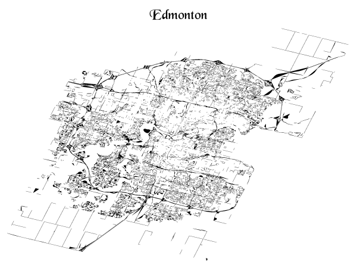
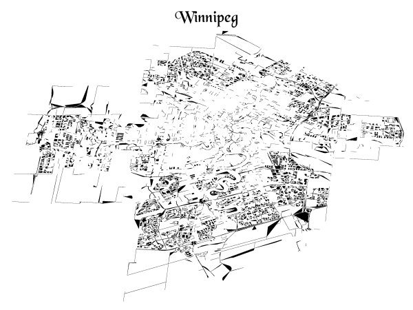

using GeoMakie
using GeoInterfaceMakie
using GeoInterface
using CairoMakie
using Shapefile
using DataFrames
using DataFramesMeta
using StringEncodings
using Pkg.ArtifactsVisualizing roads in the cities of Canada
Keywords
julia
Let’s import some packages first.
If you want to run this interactively, you can replace CairoMakie with GLMakie, i.e.
- import CairoMakie
+ import GLMakieData
Representations of Canada’s national road network are available from Statistics Canada.
artifact_roadnetwork = Pkg.Artifacts.ensure_artifact_installed("roadnetwork", joinpath(@__DIR__, "Artifacts.toml"))
path = joinpath(artifact_roadnetwork, "lrnf000r21a_e.shp")
@time gdf = DataFrame(Shapefile.Table(path));
@show size(gdf)
first(gdf, 1) 45.218459 seconds (116.50 M allocations: 7.752 GiB, 3.89% gc time, 2.02% compilation time)
size(gdf) = (2242117, 26)1×26 DataFrame
| Row | geometry | OBJECTID | NGD_UID | NAME | TYPE | DIR | AFL_VAL | ATL_VAL | AFR_VAL | ATR_VAL | CSDDGUID_L | CSDUID_L | CSDNAME_L | CSDTYPE_L | CSDDGUID_R | CSDUID_R | CSDNAME_R | CSDTYPE_R | PRDGUID_L | PRUID_L | PRNAME_L | PRDGUID_R | PRUID_R | PRNAME_R | RANK | CLASS |
|---|---|---|---|---|---|---|---|---|---|---|---|---|---|---|---|---|---|---|---|---|---|---|---|---|---|---|
| Polyline | Int64 | String | String? | String? | String? | String? | String? | String? | String? | String? | String? | String? | String? | String? | String? | String? | String? | String? | String? | String? | String? | String? | String? | String | String? | |
| 1 | Polyline(Rect(7.65014e6, 1.27149e6, 7.65038e6, 1.2717e6), Int32[0], Shapefile.Point[Point(7.65014e6, 1.27149e6), Point(7.65017e6, 1.2715e6), Point(7.6502e6, 1.27152e6), Point(7.65023e6, 1.27153e6), Point(7.65024e6, 1.27154e6), Point(7.65027e6, 1.27156e6), Point(7.6503e6, 1.27158e6), Point(7.65031e6, 1.27159e6), Point(7.65033e6, 1.27162e6), Point(7.65035e6, 1.27164e6), Point(7.65036e6, 1.27166e6), Point(7.65037e6, 1.27169e6), Point(7.65038e6, 1.2717e6)]) | 1 | 5792582 | des 60 | RANG | missing | 195 | 195 | 182 | 194 | 2021A00052457050 | 2457050 | Saint-Marc-sur-Richelieu | M\xc9 | 2021A00052457050 | 2457050 | Saint-Marc-sur-Richelieu | M\xc9 | 2021A000224 | 24 | Quebec / Qu\xe9bec | 2021A000224 | 24 | Quebec / Qu\xe9bec | 4 | 23 |
The documentation says CSDNAME is the Census subdivision name
, which seems to map to cities.
Let’s convert it to a proper encoding first:
latin1_to_utf8(s) = decode(Vector{UInt8}(String(coalesce(s, ""))), "Windows-1252")
@time @rtransform! gdf begin
:CSDNAME_L_UTF8 = latin1_to_utf8(:CSDNAME_L)
:CSDNAME_R_UTF8 = latin1_to_utf8(:CSDNAME_R)
end 17.346026 seconds (111.19 M allocations: 9.443 GiB, 17.28% gc time, 5.29% compilation time: 17% of which was recompilation)Visualizations
We can now create a plot for each city using Makie:
Code
function plot_city(gdf, city_name)
df = @rsubset gdf (:CSDNAME_L_UTF8 == city_name || :CSDNAME_R_UTF8 == city_name)
empty_theme = Theme(
fonts=(; weird="Blackchancery"),
fontsize=32,
Axis=(
backgroundcolor=:transparent,
leftspinevisible=false,
rightspinevisible=false,
bottomspinevisible=false,
topspinevisible=false,
xticklabelsvisible=false,
yticklabelsvisible=false,
xgridcolor=:transparent,
ygridcolor=:transparent,
xminorticksvisible=false,
yminorticksvisible=false,
xticksvisible=false,
yticksvisible=false,
xautolimitmargin=(0.0, 0.0),
yautolimitmargin=(0.0, 0.0),
titlefont=:weird,
),
)
with_theme(empty_theme) do
fig = Figure()
ax = Axis(fig[1, 1])
poly!.(GeoInterface.convert.(Ref(CairoMakie.GeometryBasics), df[:, :geometry]); strokecolor=:black, color=:black)
ax.title = city_name
fig
end
end;plot_city(gdf, "Toronto")
plot_city(gdf, "Montréal")
plot_city(gdf, "Vancouver")
plot_city(gdf, "Ottawa")
plot_city(gdf, "Calgary")
plot_city(gdf, "Edmonton")
plot_city(gdf, "Winnipeg")
Reuse
Citation
BibTeX citation:
@online{krishnamurthy2023,
author = {Krishnamurthy, Dheepak},
title = {Visualizing Roads in the Cities of {Canada}},
pages = {undefined},
date = {2023-04-29},
url = {https://kdheepak.com/blog/visualizing-roads-in-the-cities-of-canada},
langid = {en}
}
For attribution, please cite this work as:
D.
Krishnamurthy, “Visualizing roads in the cities of Canada,”
Apr. 29, 2023. https://kdheepak.com/blog/visualizing-roads-in-the-cities-of-canada.